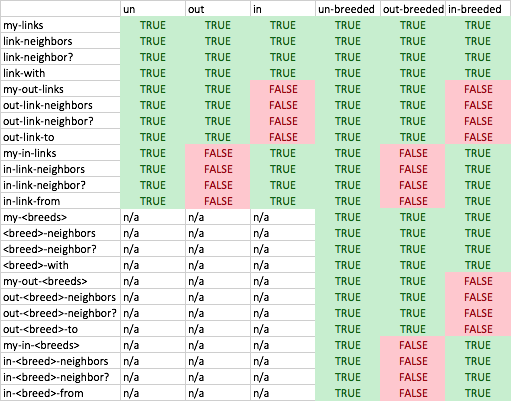
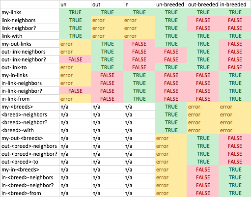

Many models created in earlier versions of NetLogo also work in NetLogo 5.0. However, some models will need changes. If an old model isn’t working, this section of the User Manual may be able to help you.
What issues may arise depends on what version of NetLogo the model was created with.
This guide only covers changes most likely to cause issues for users. See the release notes for more complete details on differences between versions.
The arduino extension has substantially changed the way it receives values from
Arduino boards. Please consult the arduino example sketch (included within
the “models” folder under Chapter 8 of the IABM textbook) for an updated sketch
compatible with the Arduino example model. If you have an existing arduino
sketch, you will need to adjust the format used to send values to NetLogo.
Old sketches will have code which sends back messages like “;A,2.5;”. For the
new version of the arduino extension to receive the same message, sketches
should send “;A,D,2.5;” instead. The added ‘D,’ informs Netlogo that
the value being sent is a number and not a string.
All primitives have been removed from the cf extension and replaced by the cf:ifelse and
cf:ifelse-value multi-branch primitives. We encourage existing cf users to
adjust their code to use these new primitives. Over time, we hope to use these primitives
as an example on which to remodel NetLogo’s existing ifelse and ifelse-value
primitives. Because this would be a relatively large language change, we would love
to hear any feedback address you may
have from using these cf extension primitives.
In NetLogo 6.0, tasks have been replaced by anonymous procedures. This means
that task is no longer a primitive, it’s been replaced by the new
arrow syntax for creating anonymous procedures.
Similarly, question mark variables like ?, ?1, and ?2 are now just
ordinary names in NetLogo and can be used to name procedure variables, let
variables, or anonymous procedure variables. Finally, is-reporter-task? and
is-command-task? have been replaced by is-anonymous-reporter? and
is-anonymous-command?.
To make this transition easier, we’ve added an automatic conversion step which
should allow most models saved in NetLogo 5 to be converted to use the new
syntax automatically. The autoconverter has been a substantial piece of effort
and we’ve tested it on all the models in the models library. To use it, ensure
the model compiles and run properly in NetLogo 5 or later, then save it from
NetLogo 5 or later. Then, simply open the model in NetLogo 6. If all goes well,
you’ll see the converter has changed code like task [?1 + ?2] to
[ [?1 ?2] -> ?1 + ?2 ]. The question marks are meant to serve as temporary
placeholders for conversion. They enable your model to run, but you can (and
should) replace these variables with meaningful names. If you open a model with
tasks and it has not been converted, the autoconverter wasn’t able to convert
your model. Rather than attempt to autoconvert your model and break something,
the model will open, you will be shown the appropriate errors and given a chance
to edit your model.
While we have tested the autoconverter thoroughly, we expect there to be some cases it doesn’t cover.
run or runresult to evaluate strings containing tasks,
the autoconverter will not change those strings to be anonymous procedures.
To make run and runresult work as expected, look at strings in your model
and change any which rely on task or ?-variables to instead rely on
anonymous proceduresIf your model doesn’t fall into the above categories and doesn’t convert or converts incorrectly, please email our feedback address and we’ll be happy to offer whatever assistance we can.
In previous versions of NetLogo, link reporters have had a number of
inconsistencies regarding directed and undirected links. For example, my-links
would report all links connected to a turtle, whereas link-neighbors would
only report neighbors connected by undirected links. Furthermore, it was quite
difficult to work with models where the links could either be directed or
undirected.
To alleviate these issues, the link primitives have been overhauled in 6.0. These changes only affect existing models that use both directed and undirected links while also using the unbreeded link primitives.
The changes are as follows:
out-link-neighbor?
will report true if the current turtle is connected to the given turtle by
either an outgoing directed link or an undirected link. If you only want
directed, outgoing links, you can use a breed-specific reporter or
my-out-links with [ is-directed? self ]. Generally, when working with models
that have both directed and undirected links, you will probably want to use
the “out” primitives for most things now.in-link-neighbor?
will report true if the current turtle is connected to the given turtle by
either an incoming directed link or an undirected link. If you only want
directed, incoming links, you can use a breed-specific reporter or
my-in-links with [ is-directed? self ].Furthermore, there are no longer restrictions regarding which reporters can be used with which breeds. For unbreeded links, this makes it possible to use the same primitives regardless of whether your network ends up being directed or undirected.
The new behavior (including all changed primitives) is summarized by the following table, where “un” refers to undirected links, “out” refers to directed, outgoing links, and “in” refers to directed, incoming links.


Oracle, the company behind Java, has announced that Java applets are deprecated (see this blog post for more information). This comes as the major browsers have removed support for plug-ins (like java applets) or announced that they plan to do so.
Instead of using applets to distribute your model, NetLogo offers the option to export to NetLogo Web. While NetLogo Web doesn’t yet offer the full functionality of desktop NetLogo (in particular, extensions aren’t supported), it is now capable of running most of the models in the NetLogo models library and we hope that most model distributors will find that it meets their needs. To export to NetLogo Web, choose the “Save As NetLogo Web” option from the “File” menu.
Users will notice several tweaks to the NetLogo User interface when opening NetLogo 6 for the first time. We’ve removed the bar border above the view. To open the 3D View in 6.0, you can right click on the view and choose “Switch to 3D View”, or choose the same option from the “Tools” menu. Ticks are now displayed in the interface tab toolbar beneath the speed slider. To adjust the label used for “ticks” and other view properties, you can choose the “Settings” button at the far right of the interface tab toolbar or right-click on the view and choose “Edit…” from the context menu that appears.
In NetLogo 6.0, nobody is no longer a valid chooser value. Just as you can’t
put turtle 0 or turtles, nobody refers to a non-literal value which isn’t
supported in choosers. As part of this transition, choosers containing nobody
(or nobody within a nested list) will have all uses of nobody changed to
"nobody" when opened in NetLogo 6.0.
In NetLogo 6.0, you must specify both plural and singular breed names. In prior
versions, declarations like breed [mice] were legal, but this support has been
removed in 6.0. If you have models which use only plural breed names, it is
recommended that you convert them to specify both names before opening in 6.0
since doing so will permit the NetLogo converter to work most effectively on any
other code in your model which needs conversion.
The NetLogo movie prims hadn’t been updated in quite some time and generated
invalid quicktime movie files. They have been replaced by prims in the new vid
extension. The full documentation for the vid extension is available in the
Vid Extension section of the manual. As with all extensions, users
will need to include vid in the extensions section of their NetLogo model.
Many of the movie primitives have direct parallels in the vid extension which
can be found in the following table:
| movie prim | vid prim |
|---|---|
movie-cancel | vid:reset-recorder |
movie-close | vid:save-recording *file-name* |
movie-grab-view | vid:record-view |
movie-grab-interface | vid:record-interface |
movie-start *file-name* | vid:start-recorder *optional-width* *optional-height* |
movie-status | vid:recorder-status |
When you first open a file in NetLogo 6.0, your file will be automatically
converted to use the new primitives. This will include adding a new global
variable - _recording-save-file-name to track the name of the active
recording, as well as adding the vid extension to the model. You should verify
that the conversion took place correctly. There is no replacement for
movie-set-frame-rate. The vid extension records frames at 25 per second,
slightly more than the default 15 frames-per-second of the movie prims. If your
recording is sensitive to framerate, consider recording each existing frame
twice (2/25 is fairly close to 1/15) or consider using a postprocessing tool
(like gstreamer or ffmpeg) to adjust the video playback speed.
In NetLogo 6.0, expanded error-checking in the NetLogo compiler causes models
which define undirected-link-breed [ undirected-links undirected-link ] and/or
directed-link-breed [ directed-links directed-link ] to error for redefining a
primitive reporter (either is-directed-link? or is-undirected-link?). If
your model doesn’t use is-directed-link? or is-undirected-link? at all,
simply changing the breed names should resolve the error.
If you used either of the is-<directedness>-link? prim, there are several ways
you might modify your model to account for this change. If your model has no
other breeded links, consider removing the link breed and using the built-in
link primitives. If your model has other breeded links, but only of different
directedness, simply changing the breed name (and all related primitive names)
should resolve the problem. Note that in this case is-directed-link? and/or
is-undirected-link? continue to behave the same as before. If your model has
other breeded links of the same directedness, the change will vary depending on
your model. The breed name(s) must be changed, but you must decide whether you
used is-directed-link? / is-undirected-link? to check link directedness or
to check that link breed membership. If you used it to check link directedness
leaving it as-is should keep the current behavior of the model. Otherwise, it
can simply be replaced by is-<breed>?.
hubnet-set-client-interfaceThe hubnet-set-client-interface primitive was rendered obsolete by the
introduction of the HubNet client editor and end of support for calculator
HubNet. We have found it used in very few models and have decided to remove it
from the language. On opening an existing model in 6.0, the autoconverter should
remove all uses of hubnet-set-client-interface from your code.
One of our goals in NetLogo 6.0 has been to make it easier to develop extensions and easy to develop more powerful extensions. To that end, we’ve bumped the extension API from 5.0 to 6.0. Existing extensions will need to recompile changing the “NetLogo-Extension-API-Version” in their jar’s MANIFEST.MF from 5.0 to 6.0.
Some of the changes we’ve made to the extensions API include:
org.nlogo.api.Context now allows access to the current world and workspace
objects without requiring a cast to an org.nlogo.nvm.ExtensionContext.org.nlogo.api.Workspace has been introduced as a stable API for extensions
to depend on.For a full list of changes between 5.0 and 6.0, please visit our Extension Transition Guide on GitHub.
In service of making it easier to build extensions, we’ve expanded and improved
the
NetLogo Extension Plugin
for sbt, the Scala Build Tool. Sbt is a powerful
tool for building JVM projects and can be used in projects that use Scala, Java,
or a combination of the two. We’re now using the Extension Plugin to build all
of the bundled extensions and we strongly recommend extension authors take
advantage of the plugin as it makes configuring a NetLogo extension build
extremely straightforward. The plugin handles fetching the NetLogo jar which
extensions compile against as well as generation of a jar for the extension
containing the appropriate metadata.
range primitiveA new range primitive was added in NetLogo 6. As “range” may appear in
existing models as a procedure or variable name, we have added an autoconversion
step which will ensure that these models continue to operate immediately upon
opening in NetLogo 6. Existing uses of range in models authored before
NetLogo 6 will be converted to _range upon first opening in NetLogo 6. Once
the model opens, you can rename _range to suit your model.
In 5.2, the hsb primitives have been changed to work with the standard scale
values of 360 for hue, and 100 for saturation and brightness. This affects the
primitives hsb, extract-hsb and approximate-hsb.
The old primitives, scaled to 255, are automatically transitioned to and have
been renamed __hsb-old, __extract-hsb-old and __approximate-hsb-old.
The GoGo extension has been upgraded to use newer GoGo boards with the HID interface. Many of the older primitives no longer work, and will alert you to upgrading your GoGo board’s firmware.
If you need to continue to use a serial interface, you can use the bundled gogo-serial extension. Change your model to use gogo-serial as opposed to gogo. More details here.
If you cannot upgrade to use the new HID extension nor the new serial extension, the original extension can be found at https://github.com/NetLogo/GoGo-RXTX-Extension
In 5.0, you don’t have to put your plotting code in the Code tab anymore. Instead, you can put it inside the plots themselves, in the Interface tab.
Nonetheless, the old style and all of the existing plotting primitives are still supported. We recommend changing your model to use the new style, but if you don’t, it should still work.
The following example shows how to change a model to use the new style. Suppose you have a typical NetLogo 4.1 model with one plot called “populations” and two pens called “robots” and “humans”. The old code might look like:
to setup
clear-all
...
do-plotting
end
to go
...
tick
do-plotting
end
to do-plotting
set-current-plot "populations"
set-current-plot-pen "robots"
plot count robots
set-current-plot-pen "humans"
plot count humans
end
Here are the steps to make the transition:
plot count robots command and paste it into the Update Commands
field for the robots pen in the plot edit dialog. Remove it from the
do-plotting procedure.plot count humans command can be moved in the same way for the humans
pen.do-plotting procedure, it doesn’t
actually do anything anymore! Remove it.do-plotting procedure calls in setup and
go. In setup, the do-plotting call should be changed to reset-ticks.
In go, the do-plotting call should be changed to tick. reset-ticks and
tick will both cause plotting to happen automatically.The resulting (much simpler) code looks like this:
to setup
clear-all
...
reset-ticks
end
to go
...
tick
end
For more details on how plotting works in NetLogo 5.0, see the Plotting Sections of the Programming Guide and the Interface Guide. For details on how plotting interacts with the tick counter, read on.
The way the tick counter works has changed in 5.0. Instead of being initially set to 0, the tick counter is initially blank.
reset-ticksYou must use reset-ticks to start the tick counter at 0 before using ticks,
tick or tick-advance for the first time.
reset-ticks should go at the end of your setup procedure. Putting it there
will allow your model to work with 5.0’s new plotting features.
reset-ticks and plottingIn 5.0, you don’t have to put your plotting code in the Code tab anymore.
Instead, you can put it inside the plots themselves, in the Interface tab. Code
inside plots is triggered by reset-ticks and tick. Resetting the tick
counter runs plot setup code, and then it also runs plot update code to plot the
initial state of the model. The initial state of the model won’t be in place
until the end of setup, so that’s why reset-ticks should go at the end.
__clear-all-and-reset-ticksIn order for models from previous NetLogo versions to work in 5.0 without
changes, when an old model is opened in 5.0, any occurrences of clear-all (or
ca) are automatically changed to __clear-all-and-reset-ticks, which combines
the effects of clear-all and reset-ticks. The two underscores on the name
indicate that this is not a normal primitive, but exists only for backwards
compatibility.
You should remove __clear-all-and-reset-ticks from your code, replace it with
clear-all, and put reset-ticks at the end of your setup procedure. (This
doesn’t happen automatically because the structure of NetLogo models is too
free-form for an automatic converter to reliably make the change for you.)
NetLogo 5.0 fully supports international characters cross-platform, using the Unicode character set. NetLogo 5.0 model files always represent Unicode characters using the UTF-8 encoding.
Previous versions of NetLogo allowed Unicode characters to be used in some contexts. However, model files were saved in the platform’s default encoding, which on most systems was something other than UTF-8. Characters were handled correctly on the same platform (e.g. two Windows machines), but could be altered if the model was moved between platforms (e.g. from Windows to Mac or vice versa).
When opening an existing model in NetLogo 5.0, if the model contains international or other non-ASCII characters, the characters may be interpreted incorrectly, because they were originally written in a platform-specific encoding, but then read back in in UTF-8.
If only a few characters are affected, you might find it easiest just to fix them manually.
But if you expect a large number of characters to be affected, and you want them translated automatically, you can use a third party utility to re-encode your .nlogo file from its original encoding into UTF-8. After conversion, open the model in NetLogo 5.0 and all characters should be correct.
NetLogo 5.0 uses the Markdown markup language to allow you to format your Info tab, including headers, bold and italics, images, and so forth.
Earlier versions of NetLogo used a custom markup language with much more limited capabilities.
When opening a model from an older version, NetLogo 5.0 translates your old markup into Markdown. Most of the time this produces good results, but you may want to check the results yourself and make sure that your Info tab still looks good.
In NetLogo 5.0 every model has a “target frame rate” which affects the default speed at which the model runs, when the speed slider is in the middle, on the “normal speed” setting.
The default target frame rate for new models, and for models that were created in earlier versions of NetLogo, is 30 frames per second. If you are using tick-based updates, as we recommend for most models, then that translates to 30 ticks per second.
If your model runs slower in 5.0 than it ran in 4.1, it’s probably just because its speed is being limited by this rate. If you want, you can press the Settings button in the Interface tab and change the frame rate to a higher number.
Some old models used the every command to set a default speed. In most case
this can be now removed from the code, and the target frame rate setting used
instead.
The underlying data structure for NetLogo lists has changed.
In NetLogo 4.1, a NetLogo list was represented internally as a singly linked
list. Some operations on singly linked lists are fast (such as first and
butfirst) but others are slow because they could require traversing the whole
list (such as item and last).
In NetLogo 5.0, lists are now actually trees internally. As a result, some operations are a little slower, but other operations are drastically faster on long lists. See the Lists section of the Programming Guide for details.
Some models may run a little slower with the new data structure, especially if you make heavy use of short lists. But other models will run faster – perhaps dramatically faster.
Some special ways of writing list-processing code that were useful in
NetLogo 4.1 are no longer needed in 5.0. For example, since in 4.1 fput was
fast and lput was slow, modelers sometimes built up lists in reverse order
using fput, perhaps calling reverse later to restore the intended order. In
NetLogo 5.0, you don’t need to code that way anymore. fput and lput are the
same speed.
If you are the author of an extension, you will need to recompile it against the 5.0 NetLogo.jar and lib directory for it to work with 5.0.
You may also need to be aware of the following changes:
The code for specifying the syntax of a primitive has changed slightly, for
example Syntax.TYPE_STRING is now Syntax.StringType(). (From Java, the pair
of parentheses at the end is required. In Scala, you can omit them.)
One significant change is that org.nlogo.api.LogoList no longer has a public
constructor. Instead, there are two new ways to construct a LogoList.
If you have a java.lang.Iterable, you can copy the contents into a fresh
LogoList by passing it to the static method LogoList.fromJava(). See the
array extension source code for a sample usage.
Or, to build up a new list one item a time, use org.nlogo.api.LogoListBuilder.
The Extensions Guide has sample code showing the use of
LogoListBuilder.
In prior NetLogo versions, the extensions API required that each extension primitive have its own separate top-level class with a no-argument constructor. These limitations have now been lifted. Also, api.Primitive objects are now made only once, when the extension is loaded, instead of every time the Code tab was recompiled.
set and ofThe following syntax is no longer supported:
set [<variable>] of <agent> <value>
Commands of this form must be rewritten using ask:
ask <agent> [ set <variable> <value> ]
Or, if the new value must be computed by the asking agent and not by the agent whose variable is being set:
;; OPTION #1 (using let):
let new-value <value>
ask <agent> [ set <variable> new-value ]
;; OPTION #2 (using myself):
ask <agent> [ set <variable> [value] of myself ]
So for example, this:
set [color] of turtle 0 red
Can be rewritten as:
ask turtle 0 [ set color red ]
It is not necessary to use let or myself since red is red from the point of
view of both agents.
However, this:
set [color] of turtle 0 color
Must be rewritten as:
let new-color color
ask turtle 0 [ set color new-color ]
or
ask turtle 0 [ set color [color] of myself ]
in order not to change the meaning, since the two agents may have different
starting values for color. The form using myself is briefer, but the former
using let may be considered clearer, depending on context and individual
preference.
Prior to NetLogo 4.0, a dead turtle’s who number (stored in the who turtle
variable) could be reassigned to a later newborn turtle. In NetLogo 4.0, who
numbers are never reused until who numbering is reset to 0 by the clear-all
or clear-turtles command. This change in behavior may break a few old
models.
NetLogo 4.0 provides two different observer commands for creating turtles,
create-turtles (crt) and
create-ordered-turtles (cro).
crt gives the new turtles random colors and random integer headings. cro
assigns colors sequentially and gives the turtles sequential equally spaced
headings, with the first turtle facing north (heading of 0).
Prior to NetLogo 4.0, the crt command behaved the way cro does now. If your
old model depends on the “ordered” behavior, you will need to change your code
to use cro instead of crt.
It is common for old models that used crt to contain extra commands to
randomize the new turtles’ headings, for example rt random 360 or set heading random 360. These commands are no longer necessary when used inside crt.
Prior to NetLogo 4.0, the + (addition) operator could be used to
concatenate strings and join lists. In current NetLogo, + only works on
numbers. To concatenate strings, use the word primitive; to join lists
together, use the sentence primitive. This language change was made to
increase the speed of code that uses +.
Old code:
print "There are " + count turtles + " turtles."
New code:
print (word "There are " count turtles " turtles.")
Likewise, if you need to concatenate lists, use SENTENCE.
This change is not handled automatically when converting old models; users will need to change their code by hand.
We know this change will be awkward for users who are used to the old syntax. We have made this change for efficiency and consistency. We can implement an addition operator that only adds numbers much more efficiently than one that handles several different data types. Because addition is such a common operation, NetLogo’s overall speed is affected.
-at primitivesThe observer may no longer use patch-at, turtles-at, and
BREEDS-at. Use patch, turtles-on patch, and
BREEDS-on patch instead. Note that patch now rounds its
inputs (before it only accepted integer inputs).
NetLogo 3.1 had supports for using links to connect turtles to make networks, graphs, and geometric figures. The links were themselves turtles.
In NetLogo 4.0, instead of links being turtles, links are now an independent fourth agent type, right alongside observer, turtles, patches. The primitives involving links are no longer considered experimental; they are now fully part of the language.
Models that use the old, experimental turtle-based link primitives will need to be updated to use link agents. The differences are not huge, but hand updating is required.
Links are documented in the Links section of the Programming Guide, and in the NetLogo Dictionary entries for the link primitives. See the Networks section of the Models Library for example models that use links. There are also some link-based Code Examples.
First you will need to remove any breeds called “links” if you are only using
one type of links then you will not have to use breeds at all. If you are using
multiple types of links see undirected-link-breed and
directed-link-breed. Commands and reporters that contain the word “links”
(like __create-links-with, etc.) will automatically be converted to the new
form without underscores (create-links-with).
However, primitives that use a different breed name (such as “edges”) will not
be converted. You will need to remove the underscores by hand and unless you are
declaring a link breed with that name you will need to change the breed
designation to “links”.
The commands remove-link(s)-with/from/to no longer exist. Instead you should
ask the links in question to die.
For example:
ask turtle 0 [ __remove-links-with link-neighbors ]
becomes
ask turtle 0 [ ask my-links [ die ] ]
Several of the layout commands have slightly different inputs, the first two
inputs are generally a turtle agentset and a link agentset to perform the layout
on. See the dictionary entries for details. layout-spring, layout-radial
and layout-tutte
You may also need to rearrange the declaration of turtles-own variables, since
links were once actually turtles. Any variables that apply to links should be
moved into a links-own block.
Since links are no longer turtles they no longer have the built-in turtle
variables (though some of the link variables are the same such as color and
label. If you formerly used the location of link turtles you will now need
to calculate the midpoint of the link. This is fairly simple in a non-wrapping
world.
to-report link-xcor
report mean [xcor] of both-ends
end
to-report link-ycor
report mean [ycor] of both-ends
end
it is a little bit trickier in a wrapping world but still fairly straightforward.
to-report link-xcor
let other-guy end2
let x 0
ask end1
[
hatch 1
[
face other-guy
fd [distance other-guy] of myself / 2
set x xcor
die
]
]
report x
end
and similarly for ycor.
If you used either the size or heading of the link turtles you can use the
reporters link-length and link-heading instead.
We have replaced three different language constructs, -of (with hyphen),
value-from, and values-from with a single of construct (no hyphen).
| old | new |
|---|---|
| `color-of turtle 0` | `[color] of turtle 0` |
| `value-from turtle 0 [size * size]` | `[size * size] of turtle 0` |
| `mean values-from turtles [size]` | `mean [size] of turtles` |
When of is used with a single agent, it reports a single value. When used with
an agentset, it reports a list of values (in random order, since agentsets are
always in random order).
Note that when opening old models in the new version, -of, value-from, and
values-from will automatically be converted to use “of” instead, but some
nested uses of these constructs are too complex for the converter and must be
converted by hand.
askThe ask command is now serial rather than concurrent. In other words, the
asked agents will run one at a time. Not until one agent completely finishes the
entire body of the ask does the next agent start.
Note that even the old ask was never truly concurrent; we simulated
concurrent execution by interleaving execution among the agents using a
turn-taking mechanism described in the NetLogo FAQ.
We have made this change because in our experience, users often wrote models
that behaved in unexpected ways due to the simulated concurrency, but rarely
wrote models that benefited from the simulated concurrency. Models exhibiting
unexpected behavior could usually be fixed by adding the
without-interruption command in the right places, but it was difficult for
users to know whether that command was needed and if so, where.
In NetLogo 4.0, without-interruption is no longer necessary unless your
model uses ask-concurrent (or a turtle or patch forever button containing
code that depends on simulated concurrency). In most models, all uses of
without-interruption can be removed.
The simulated concurrency formerly employed by “ask” is still accessible in three ways:
ask-concurrent primitive instead of ask to get the old
simulated concurrency. (We don’t recommend this, though.)ask-concurrent.ask-concurrent as
well.Note that ask itself is always serial regardless of the context in which it is
used, however.
In our own Models Library, models that make use of this concurrency are rare. A prominent example, though, is Termites, which uses a concurrent turtle forever button.
NetLogo now has a built-in tick counter for representing the passage of simulated time.
You advance the counter by one using the tick command. If you need to read
its value, there’s a reporter called ticks. The clear-all command resets
the tick counter; so does reset-ticks.
In most models the tick counter will be integer-valued, but if you want to use
smaller increments of time, you can use the tick-advance command to advance
the tick counter by any positive amount, including fractional amounts. Some
Models Library models that use tick-advance are Vector Fields and the GasLab
models.
The value of the tick counter is displayed in the toolbar at the top of the Interface tab. (You can use the Settings… button in the toolbar to hide the tick counter, or change the word “ticks” to something else.)
In the past, NetLogo always tried to update the view about 20 times a second.
We’re now calling that “continuous” view updates. The biggest problem with it
was that you usually want updates to happen between model ticks, not in the
middle of a tick, so we had a checkbox on buttons that (by default) forced a
display update after every button iteration. That made sure updates happened
between ticks, but it didn’t get rid of the intermediate updates. You had to use
no-display and display to lock them out.
We still support continuous updates. They are the default when you start up
NetLogo. But most Models Library models now use tick-based updates. With
tick-based updates, updates happen only when the tick counter advances. (The
display command can be used to force additional
updates; see below.)
The advantages of tick-based updates as we see them are as follows:
setup buttons are no longer affected by
the speed slider. This was a real annoyance with the old speed slider. (The
annoyance persists for models that use continuous updates, though.)As mentioned above, most models in our Models Library now use tick-based updates.
Even for models that would normally be set to tick-based updates, it may be useful to switch to continuous updates temporarily for debugging purposes. Seeing what’s going on within a tick, instead of only seeing the end result of a tick, could help with troubleshooting.
If you switch your model to use tick-based updates, you’ll also need to add the
tick command to your code, otherwise the view won’t
update. (Note that the view still always updates when a button pops up or a
command entered in the command center finishes, though. So it’s not like the
view will just stay frozen indefinitely.)
Here are the steps to follow to convert your model to use ticks and tick-based updates in NetLogo 4.0:
tick command to your go procedure, at or near the end. In Models
Library models we always put tick after the agents move but before any
plotting commands. That’s because the plotting commands might contain
something like plotxy ticks ... and we want the new value of the tick
counter used, not the old one. Most models don’t refer to the tick counter in
their plotting commands, but nonetheless, for consistency and to avoid
mistakes we suggest always putting tick before the plotting commands.Some models will require some additional changes:
tick command and ticks reporter instead. (If your
model uses fractional increments of time, use tick-advance instead of
tick.) If you had a monitor for that variable, you can get rid of it;
there’s now a tick counter in the toolbar.clear-all resets the tick counter to zero. If you don’t use clear-all
in your setup procedure, then you may need to add reset-ticks to reset
the counter to zero.no-display and display to prevent view updates from
happening in the middle of go, you can get rid of them.display command to force
additional view updates so the user can see what is going on.Previous versions of NetLogo had a speed slider that could be used to make models run slower, so you can see what’s going on.
In NetLogo 4.0, the slider can be used to speed up models as well. It does this by updating the view less frequently. Updating the view takes time, so the fewer updates, the faster the model runs.
The default position of the slider is in the center. When you’re at the center, the slider says “normal speed”.
As you move the slider away from the center position, the model will gradually run faster or slower.
At very high speeds, view updates become very infrequent and may be separated by several seconds. It may feel like the model is actually running slower, since the updates are so infrequent. But watch the tick counter, or other indicators such as plots, and you’ll see that yes, the model really is running faster. If the infrequent updates are disconcerting, don’t push the slider so far over.
When using tick-based updates, slowing the model down does not cause additional view updates. Rather, NetLogo simply pauses after each tick.
When using continuous updates, slowing the model down means view updates become
more closely spaced. If you push the speed slider more than halfway to the left,
the model will be running so slowly that you can watch turtles moving one at a
time! This is new in NetLogo 4.0; in previous NetLogo versions, no matter how
slowly you ran a model, you would never see the agents in an ask moving one at
a time; all the agents in an ask always appeared to move together.
NetLogo no longer maintains an internal distinction between integers and floating point numbers. So for example:
Old:
observer> print 3
3
observer> print 3.0
3.0
observer> print 1 + 2
3
observer> print 1.5 + 1.5
3.0
observer> print 3 = 3.0
true
(The last line shows that although the distinction between integer 3 and floating point 3.0 was maintained, the two numbers were still considered equal.)
New:
observer> print 3
3
observer> print 3.0
3
observer> print 1 + 2
3
observer> print 1.5 + 1.5
3
observer> print 3 = 3.0
true
We expect that only rare models will be negatively impacted by this change.
A benefit of this change is that NetLogo now supports a much larger range of integers. The old range was -2,147,483,648 to 2,147,483,647 (around +/- 2 billion); the new range is +/-9,007,199,254,740,992 (around +/- 9 quadrillion).
NetLogo 3.1 (and some earlier versions) included primitives called
turtles-from and patches-from that were occasionally useful for building
agentsets. In NetLogo 4.0, these primitives have been replaced with new
primitives called turtle-set and patch-set that are much more flexible
and powerful. (link-set exists as well.) See the entries for these
primitives in the NetLogo Dictionary. Models that use the old turtles-from and
patches-from will need to be altered by hand to use the new primitives.
In NetLogo 3.1 RGB and HSB colors could be approximated as NetLogo colors using
the rgb and hsb primitives. These have been renamed to approximate-rgb
and approximate-hsb and now expect inputs in the range 0-255, not 0-1.
The full RGB spectrum is now available in NetLogo so it may no longer be necessary to use these primitives at all. You can set any color variable to a three-item RGB list, with values in the 0-255 range, and get that exact color. See the Color section of the Programming Guide for details.
In previous versions __tie was provided as an experimental feature. As of
NetLogo 4.0 links have a tie-mode variable which can be set to "none",
"free", or "fixed". In 4.0 tie is now a link-only primitive. This means
that to tie turtle 1 to turtle 0 you write:
ask turtle 0 [ create-link-to turtle 1 [ tie ] ]
See the Tie section of the programming guide for details.
If your model is behaving strangely or incorrectly, it may be because since
NetLogo 3.1, agentsets are now always in random order. In prior versions of
NetLogo, agentsets were always in a fixed order. If your code depended on that
fixed order, then it won’t work anymore. How to fix your model to work with
randomized agentsets depends on the details of what your code is doing. In some
situations, it is helpful to use the sort or sort-by primitives to
convert an agentset (random order) into a list of agents (fixed order). See
“Lists of agents” in the Lists section of the
Programming Guide.
If you are seeing pieces of turtle shapes wrapping around the view edges, it’s because NetLogo 3.0 allowed you to turn off such wrapping in the view without affecting the behavior of the model. Since NetLogo 3.1, if you don’t want the view to wrap you must make it so the world doesn’t wrap, using the new topology feature. Making this change may require other changes to your model, though. See the Topology section of the Programming Guide for a thorough discussion of how to convert your model to take advantage of this new feature.
Many models made in NetLogo 3.0 or earlier use
setxy random world-width random world-height to scatter turtles randomly,
using either random or random-float. It only works if world wrapping is on.
(Why? Because when wrapping is on, you can set coordinates of turtles to numbers beyond the edge of the world and NetLogo will wrap the turtle to the other side. But in worlds that don’t wrap setting the x or y coordinates of a turtle to a point outside the bounds of the world causes a runtime error. The world wrap settings were added in NetLogo 3.1. See the Topology section of the Programming Guide for more information.)
To fix your model so that it works regardless of the wrapping settings, use one of these two commands instead:
setxy random-xcor random-ycor
setxy random-pxcor random-pycor
The two commands are a bit different. The first command puts the turtle on a random point in the world. The second command puts the turtle on the center of a random patch. An even more concise way to put a turtle on the center of a random patch is:
move-to one-of patches